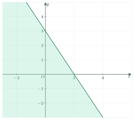
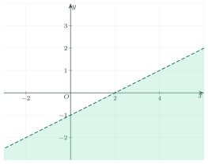
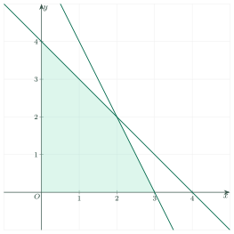

Linear Inequalities in Two VariablesBất phương trình bậc nhất hai ẩn
Grade 10 · Topic: Linear Inequalities in Two VariablesLớp 10 · Chủ đề: Bất phương trình bậc nhất hai ẩn
1Lesson IntroductionGiới thiệu bài học
Learning goalsMục tiêu bài học
By the end of this lesson you can:
Sau bài học này, em có thể:
check whether an ordered pair is a solution of \(ax+by\le c\);
kiểm tra một cặp số có là nghiệm (cặp số) của bất phương trình \(ax+by\le c\) hay không;
draw the boundary line and shade the solution region (half-plane);
vẽ đường thẳng biên và biểu diễn miền nghiệm (nửa mặt phẳng);
find the solution region of a system of inequalities;
xác định miền nghiệm của hệ bất phương trình;
turn a simple word problem into inequalities.
lập bất phương trình từ một bài toán thực tế đơn giản.
2Mathematical VocabularyTừ vựng Toán học
linear inequality in two variables – an inequality like \(ax+by\le c\) with \(a,b\) not both 0.
Bất phương trình bậc nhất hai ẩn – bất phương trình dạng \(ax+by\le c\) (hoặc \(\lt,\ge,\gt\)), với \(a,b\) không đồng thời bằng 0.
solution – a pair \((x_0;y_0)\) that makes the inequality true.
Nghiệm (cặp số) – cặp số \((x_0;y_0)\) làm bất phương trình đúng.
boundary line – the line \(ax+by=c\).
Đường thẳng biên – đường thẳng \(ax+by=c\).
half-plane – one side of a line in the plane.
Nửa mặt phẳng – một phía của một đường thẳng trong mặt phẳng.
solution region – the set of all solutions, drawn on the plane.
Miền nghiệm – tập hợp mọi nghiệm, biểu diễn trên mặt phẳng tọa độ.
system of inequalities – several inequalities that must all be true.
Hệ bất phương trình – nhiều bất phương trình phải cùng đúng.
test point – a point not on the line, used to choose the correct side.
Điểm kiểm tra – điểm không nằm trên đường thẳng biên, dùng để chọn đúng phía.
constraint – a condition that the variables must satisfy.
Ràng buộc – điều kiện mà các biến phải thỏa mãn.
3Useful English PhrasesCụm từ tiếng Anh thường gặp
Is \((1;2)\) a solution?
Cặp \((1;2)\) có là nghiệm không?
Shade the solution region.
Tô miền nghiệm.
Draw the boundary line.
Vẽ đường thẳng biên.
Solid line / dashed line
Nét liền / nét đứt
at most / at least
nhiều nhất (≤) / ít nhất (≥)
4Prerequisite ReviewÔn tập kiến thức nền
A line. \(ax+by=c\) is a straight line. Two points are enough to draw it, for example its intercepts \((\dfrac{c}{a};0)\) and \((0;\dfrac{c}{b})\).
Đường thẳng. \(ax+by=c\) là một đường thẳng. Chỉ cần hai điểm để vẽ, chẳng hạn giao điểm với hai trục \((\dfrac{c}{a};0)\) và \((0;\dfrac{c}{b})\).
Substitution. To test \((x_0;y_0)\), replace \(x\) by \(x_0\) and \(y\) by \(y_0\) and compare.
Thay số. Để kiểm tra \((x_0;y_0)\), thay \(x=x_0\), \(y=y_0\) rồi so sánh.
5TheoryLý thuyết
5.1 Linear inequalities in two variablesBất phương trình bậc nhất hai ẩn
DefinitionĐịnh nghĩa
A linear inequality in two variables \(x,y\) has the form \(ax+by\le c\) (or \(\lt,\ \ge,\ \gt\)), where \(a,b\) are not both zero.
Bất phương trình bậc nhất hai ẩn \(x,y\) có dạng \(ax+by\le c\) (hoặc \(\lt,\ \ge,\ \gt\)), trong đó \(a,b\) không đồng thời bằng 0.
A pair \((x_0;y_0)\) is a solution if \(ax_0+by_0\le c\) is true.
Cặp số \((x_0;y_0)\) là nghiệm (cặp số) nếu \(ax_0+by_0\le c\) là mệnh đề đúng.
Example: \((1;1)\) is a solution of \(2x+y\le4\) because \(2+1=3\le4\). But \((3;1)\) is not: \(6+1=7>4\).
Ví dụ: \((1;1)\) là nghiệm của \(2x+y\le4\) vì \(2+1=3\le4\). Còn \((3;1)\) không là nghiệm: \(6+1=7>4\).
5.2 Solution region: a half-planeMiền nghiệm: một nửa mặt phẳng
MethodCách làm
Step 1. Draw the boundary line \(ax+by=c\): solid for \(\le,\ge\); dashed for \(\lt,\gt\).
Bước 1. Vẽ đường thẳng biên \(ax+by=c\): nét liền với \(\le,\ge\); nét đứt với \(\lt,\gt\).
Step 2. Choose a test point not on the line, usually \((0;0)\) when \(c\ne0\).
Bước 2. Chọn điểm kiểm tra không nằm trên đường thẳng, thường là \((0;0)\) khi \(c\ne0\).
Step 3. If the test point makes the inequality true, shade the side that contains it. If not, shade the other side.
Bước 3. Nếu điểm kiểm tra làm bất phương trình đúng, tô phía chứa nó; nếu sai, tô phía còn lại.

Watch out!Lưu ý
The boundary line belongs to the solution region only for \(\le\) and \(\ge\). For \(\lt\) and \(\gt\) it is dashed and is not included.
Đường biên chỉ thuộc miền nghiệm khi dấu là \(\le\) hoặc \(\ge\). Với \(\lt\), \(\gt\) vẽ nét đứt và không lấy các điểm trên đường biên.
5.3 Systems of inequalitiesHệ bất phương trình bậc nhất hai ẩn
Solution region of a systemMiền nghiệm của hệ
The solution region of a system is the intersection of the solution regions of all its inequalities. Shade each one, then keep the part shared by all.
Miền nghiệm của hệ bất phương trình là giao các miền nghiệm của từng bất phương trình. Tô lần lượt từng miền rồi lấy phần chung.
The vertices of the region are intersections of two boundary lines. Check that each vertex satisfies all the other inequalities.
Đỉnh của miền là giao điểm của hai đường biên. Cần kiểm tra đỉnh đó thỏa mãn các bất phương trình còn lại.
5.4 From a word problem to inequalitiesTừ bài toán thực tế đến bất phương trình
ModellingLập mô hình
Name the variables. Write each constraint as an inequality: “at most” \(\to\le\), “at least” \(\to\ge\). Do not forget \(x\ge0,\ y\ge0\) when the variables are quantities.
Đặt ẩn. Viết mỗi ràng buộc thành một bất phương trình: “nhiều nhất” \(\to\le\), “ít nhất” \(\to\ge\). Đừng quên \(x\ge0,\ y\ge0\) khi các ẩn là số lượng.
6Worked ExamplesVí dụ có lời giải
ExampleVí dụ 1BasicCơ bản – Is it a solution?Có là nghiệm không?
Which pairs are solutions of \(3x-2y\le5\)?
\((1;1)\), \((3;1)\), \((0;-3)\).
Cặp nào là nghiệm của \(3x-2y\le5\)?
\((1;1)\), \((3;1)\), \((0;-3)\).
Analysis: Substitute each pair and compare with 5.
Phân tích: Thay từng cặp vào vế trái rồi so sánh với 5.
\((1;1)\): \(3-2=1\le5\) true.
\((1;1)\): \(3-2=1\le5\) đúng.
\((3;1)\): \(9-2=7\le5\) false.
\((3;1)\): \(9-2=7\le5\) sai.
\((0;-3)\): \(0+6=6\le5\) false.
\((0;-3)\): \(0+6=6\le5\) sai.
Only \((1;1)\) is a solution.
Chỉ \((1;1)\) là nghiệm.
ExampleVí dụ 2BasicCơ bản – Draw a half-planeBiểu diễn miền nghiệm
Show the solution region of \(x-2y>2\).
Biểu diễn miền nghiệm của \(x-2y>2\).
Analysis: The sign is \(>\): the boundary line is dashed.
Phân tích: Dấu \(>\): đường biên vẽ nét đứt.
The boundary line is \(x-2y=2\): it passes through \((2;0)\) and \((0;-1)\).
Đường biên \(x-2y=2\) đi qua \((2;0)\) và \((0;-1)\).
Test \((0;0)\): \(0-0=0>2\) is false. So we shade the side that does not contain the origin.
Thử \((0;0)\): \(0-0=0>2\) sai. Vậy tô phía không chứa gốc tọa độ.

Region of \(x-2y>2\): below the dashed line.Miền nghiệm của \(x-2y>2\): phía dưới đường nét đứt.
The region is the half-plane below the line \(x-2y=2\); the line itself is not included.
Miền nghiệm là nửa mặt phẳng phía dưới đường thẳng \(x-2y=2\), không kể đường thẳng.
ExampleVí dụ 3IntermediateTrung bình – A system of inequalitiesHệ bất phương trình
Find the solution region of \(\begin{cases}x\ge0\\ y\ge0\\ x+y\le4\\ 2x+y\le6\end{cases}\) and list its vertices.
Xác định miền nghiệm của hệ \(\begin{cases}x\ge0\\ y\ge0\\ x+y\le4\\ 2x+y\le6\end{cases}\) và tìm các đỉnh.
Analysis: Draw the four lines, test the origin for each, then keep the common part.
Phân tích: Vẽ bốn đường biên, thử gốc tọa độ cho từng bất phương trình rồi lấy phần chung.
\(x\ge0\) and \(y\ge0\): the first quadrant. The origin satisfies \(x+y\le4\) and \(2x+y\le6\): both half-planes contain it.
\(x\ge0\), \(y\ge0\): góc phần tư thứ nhất. Gốc tọa độ thỏa \(x+y\le4\) và \(2x+y\le6\): cả hai nửa mặt phẳng đều chứa nó.
Vertices: \(O(0;0)\); \(2x+y=6,\ y=0\Rightarrow A(3;0)\); \(x+y=4,\ x=0\Rightarrow C(0;4)\); \(x+y=4\) and \(2x+y=6\Rightarrow B(2;2)\).
Đỉnh: \(O(0;0)\); \(2x+y=6,\ y=0\Rightarrow A(3;0)\); \(x+y=4,\ x=0\Rightarrow C(0;4)\); \(x+y=4\) và \(2x+y=6\Rightarrow B(2;2)\).

The solution region is the quadrilateral \(OABC\).Miền nghiệm là tứ giác \(OABC\).
The region is the quadrilateral with vertices \(O(0;0)\), \(A(3;0)\), \(B(2;2)\), \(C(0;4)\).
Miền nghiệm là tứ giác có các đỉnh \(O(0;0)\), \(A(3;0)\), \(B(2;2)\), \(C(0;4)\).
ExampleVí dụ 4IntermediateTrung bình – ModellingBài toán thực tế
A shop packs gift bags. A small bag needs 2 pens and a large bag needs 3 pens. The shop has at most 12 pens. Let \(x\) be the number of small bags and \(y\) the number of large bags. Write the constraints and list all solutions with \(y=2\).
Một cửa hàng làm túi quà. Túi nhỏ cần 2 cây bút, túi lớn cần 3 cây bút; cửa hàng có nhiều nhất 12 cây bút. Gọi \(x\) là số túi nhỏ, \(y\) là số túi lớn. Viết các ràng buộc và liệt kê mọi nghiệm có \(y=2\).
Analysis: “At most 12” means \(\le12\). The numbers of bags are natural numbers.
Phân tích: “Nhiều nhất 12” nghĩa là \(\le12\). Số túi là số tự nhiên.
Constraints: \(2x+3y\le12,\ x\ge0,\ y\ge0\), with \(x,y\) integers.
Ràng buộc: \(2x+3y\le12,\ x\ge0,\ y\ge0\), với \(x,y\) nguyên.
For \(y=2\): \(2x+6\le12\Rightarrow x\le3\). So \(x=0,1,2,3\).
Với \(y=2\): \(2x+6\le12\Rightarrow x\le3\). Vậy \(x=0,1,2,3\).
Solutions with \(y=2\): \((0;2),(1;2),(2;2),(3;2)\).
Các nghiệm có \(y=2\): \((0;2),(1;2),(2;2),(3;2)\).
ExampleVí dụ 5AdvancedNâng cao – Largest value on a regionGiá trị lớn nhất trên một miền
On the region of Example 3, find the largest value of \(F=3x+2y\).
Trên miền nghiệm ở Ví dụ 3, tìm giá trị lớn nhất của \(F=3x+2y\).
Analysis: A linear expression reaches its largest value at a vertex of the region.
Phân tích: Biểu thức bậc nhất đạt giá trị lớn nhất tại một đỉnh của miền.
\(F(O)=0\); \(F(A)=3\cdot3=9\); \(F(B)=3\cdot2+2\cdot2=10\); \(F(C)=2\cdot4=8\).
\(F(O)=0\); \(F(A)=3\cdot3=9\); \(F(B)=3\cdot2+2\cdot2=10\); \(F(C)=2\cdot4=8\).
The largest value is \(10\), at \(B(2;2)\).
Giá trị lớn nhất là \(10\), đạt tại \(B(2;2)\).
7PracticeBài tập luyện tập
A. Multiple ChoiceA. Trắc nghiệm nhiều lựa chọn
Which pair is a solution of \(2x+y\le5\)?
Cặp số nào là nghiệm của \(2x+y\le5\)?
Answer: b. \(2+2=4\le5\). Others give 7, 6, 6.
Đáp án b. \(2+2=4\le5\). Các cặp còn lại cho 7, 6, 6.
The boundary line of \(x-y\gt3\) is…
Đường thẳng biên của \(x-y\gt3\) là…
Answer: a. The sign \(\gt\) means dashed.
Đáp án a. Dấu \(\gt\) nên vẽ nét đứt.
The origin is in the solution region of which inequality?
Gốc tọa độ thuộc miền nghiệm của bất phương trình nào?
Answer: c. \(0\lt4\) is true; the others are false at \((0;0)\).
Đáp án c. \(0\lt4\) đúng; các bất phương trình còn lại sai tại \((0;0)\).
B. True or FalseB. Đúng hoặc sai
The point \((1;1)\) is in the solution region of \(x+y\gt2\).
Điểm \((1;1)\) thuộc miền nghiệm của \(x+y\gt2\).
False: \(1+1=2\) is not greater than 2 (the point is on the dashed line).
Sai: \(1+1=2\) không lớn hơn 2 (điểm nằm trên đường nét đứt).
The solution region of a system is the intersection of the regions of its inequalities.
Miền nghiệm của hệ bất phương trình là giao các miền nghiệm của từng bất phương trình.
True. All inequalities must hold together.
Đúng. Mọi bất phương trình phải cùng đúng.
C. Short AnswerC. Trả lời ngắn
How many pairs of natural numbers \((x;y)\) satisfy \(x+y\le2\)?
Có bao nhiêu cặp số tự nhiên \((x;y)\) thỏa \(x+y\le2\)?
Enter a whole number.
Nhập một số nguyên.
Answer: 6: (0;0),(0;1),(0;2),(1;0),(1;1),(2;0).
Đáp số: 6: (0;0),(0;1),(0;2),(1;0),(1;1),(2;0).
A drink costs 5 thousand and a cake costs 8 thousand. With \(x\) drinks and \(y\) cakes, the cost is at most 40. How many pairs \((x;y)\) of natural numbers with \(y=3\) are solutions?
Một cốc nước giá 5 nghìn, một cái bánh giá 8 nghìn. Mua \(x\) cốc và \(y\) bánh hết nhiều nhất 40 nghìn. Có bao nhiêu cặp số tự nhiên \((x;y)\) với \(y=3\) thỏa điều kiện?
Enter a whole number.
Nhập một số nguyên.
Answer: 4. \(5x+24\le40\Rightarrow x\le3.2\), so \(x=0,1,2,3\).
Đáp số: 4. \(5x+24\le40\Rightarrow x\le3{,}2\) nên \(x=0,1,2,3\).
A. Multiple ChoiceA. Trắc nghiệm nhiều lựa chọn
Which pair is a solution of \(3x+y\le7\)?
Cặp số nào là nghiệm của \(3x+y\le7\)?
Answer: c. \(6+1=7\le7\). Others give 8, 8, 9.
Đáp án c. \(6+1=7\le7\). Các cặp còn lại cho 8, 8, 9.
The boundary line of \(x+y\ge4\) is…
Đường thẳng biên của \(x+y\ge4\) là…
Answer: c. The sign \(\ge\) means solid.
Đáp án c. Dấu \(\ge\) nên vẽ nét liền.
Which inequality has the origin in its solution region?
Bất phương trình nào có miền nghiệm chứa gốc tọa độ?
Answer: b. \(0\le5\) is true; the others are false at \((0;0)\).
Đáp án b. \(0\le5\) đúng; các bất phương trình còn lại sai tại \((0;0)\).
B. True or FalseB. Đúng hoặc sai
The point \((2;1)\) is in the solution region of \(x+2y\gt4\).
Điểm \((2;1)\) thuộc miền nghiệm của \(x+2y\gt4\).
False: \(2+2=4\) is not greater than 4.
Sai: \(2+2=4\) không lớn hơn 4.
A solution region of a system can be the part shared by two half-planes.
Miền nghiệm của hệ có thể là phần chung của hai nửa mặt phẳng.
True: it is the intersection.
Đúng: đó là giao của hai miền.
C. Short AnswerC. Trả lời ngắn
How many pairs of natural numbers \((x;y)\) satisfy \(x+y\le3\)?
Có bao nhiêu cặp số tự nhiên \((x;y)\) thỏa \(x+y\le3\)?
Enter a whole number.
Nhập một số nguyên.
Answer: 10 (1+2+3+4).
Đáp số: 10 (1+2+3+4).
A pen costs 4 thousand and a book costs 9 thousand. With \(x\) pens and \(y\) books, the cost is at most 45. How many pairs \((x;y)\) of natural numbers with \(y=3\) are solutions?
Một cây bút giá 4 nghìn, một quyển sách giá 9 nghìn. Mua \(x\) bút và \(y\) sách hết nhiều nhất 45 nghìn. Có bao nhiêu cặp số tự nhiên \((x;y)\) với \(y=3\) thỏa điều kiện?
Enter a whole number.
Nhập một số nguyên.
Answer: 5. \(4x+27\le45\Rightarrow x\le4.5\), so \(x=0,\dots,4\).
Đáp số: 5. \(4x+27\le45\Rightarrow x\le4{,}5\) nên \(x=0,\dots,4\).
A. Multiple ChoiceA. Trắc nghiệm nhiều lựa chọn
Which pair is a solution of \(x+3y\le8\)?
Cặp số nào là nghiệm của \(x+3y\le8\)?
Answer: b. \(2+6=8\le8\). Others give 9, 10, 11.
Đáp án b. \(2+6=8\le8\). Các cặp còn lại cho 9, 10, 11.
The boundary line of \(2x+y\lt6\) is…
Đường thẳng biên của \(2x+y\lt6\) là…
Answer: d. The sign \(\lt\) means dashed.
Đáp án d. Dấu \(\lt\) nên vẽ nét đứt.
The point \(O(0;0)\) belongs to the region of which inequality?
Điểm \(O(0;0)\) thuộc miền nghiệm của bất phương trình nào?
Answer: b. \(0\gt-1\) is true; the others are false at \((0;0)\).
Đáp án b. \(0\gt-1\) đúng; các bất phương trình còn lại sai tại \((0;0)\).
B. True or FalseB. Đúng hoặc sai
The point \((3;1)\) is in the solution region of \(x-y\lt2\).
Điểm \((3;1)\) thuộc miền nghiệm của \(x-y\lt2\).
False: \(3-1=2\) is not less than 2.
Sai: \(3-1=2\) không nhỏ hơn 2.
Every point of the boundary line is a solution of \(ax+by\le c\).
Mọi điểm trên đường biên đều là nghiệm của \(ax+by\le c\).
True: on the line \(ax+by=c\), so \(\le\) holds.
Đúng: trên đường thẳng thì \(ax+by=c\) nên \(\le\) thỏa mãn.
C. Short AnswerC. Trả lời ngắn
How many pairs of natural numbers \((x;y)\) satisfy \(x+y\le4\)?
Có bao nhiêu cặp số tự nhiên \((x;y)\) thỏa \(x+y\le4\)?
Enter a whole number.
Nhập một số nguyên.
Answer: 15 (1+2+3+4+5).
Đáp số: 15 (1+2+3+4+5).
A ruler costs 3 thousand and a notebook costs 7 thousand. With \(x\) rulers and \(y\) notebooks, the cost is at most 40. How many pairs \((x;y)\) of natural numbers with \(y=4\) are solutions?
Một cây thước giá 3 nghìn, một quyển vở giá 7 nghìn. Mua \(x\) thước và \(y\) vở hết nhiều nhất 40 nghìn. Có bao nhiêu cặp số tự nhiên \((x;y)\) với \(y=4\) thỏa điều kiện?
Enter a whole number.
Nhập một số nguyên.
Answer: 5. \(3x+28\le40\Rightarrow x\le4\), so \(x=0,\dots,4\).
Đáp số: 5. \(3x+28\le40\Rightarrow x\le4\) nên \(x=0,\dots,4\).
D. Self-practice: Multiple ChoiceD. Tự luyện: trắc nghiệm
Which pair \((x;y)\) is a solution of \(-2x-3y\ge8\)?
Cặp số \((x;y)\) nào là nghiệm của bất phương trình \(-2x-3y\ge8\)?
Answer: d. Substitute: \(-2\cdot-2-3\cdot-3=13\), and \(13\ge8\) is true. The other pairs make it false.
Đáp án d. Thay vào: \(-2\cdot-2-3\cdot-3=13\) và \(13\ge8\) đúng. Các cặp còn lại làm bất đẳng thức sai.
The point \(P(-3;2)\) belongs to the solution region of which inequality?
Điểm \(P(-3;2)\) thuộc miền nghiệm của bất phương trình nào?
Answer: c. Substitute \(x=-3\), \(y=2\) into each inequality; only the chosen one is true.
Đáp án c. Thay \(x=-3\), \(y=2\) vào từng bất phương trình; chỉ bất phương trình được chọn đúng.
The boundary line of \(x+y\gt 6\) passes through which point?
Đường thẳng biên của bất phương trình \(x+y\gt 6\) đi qua điểm nào?
Answer: d. The boundary line is \(x+y=6\). For \((3;3)\): \(1\cdot3+1\cdot3=6\).
Đáp án d. Đường biên là \(x+y=6\). Với \((3;3)\): \(1\cdot3+1\cdot3=6\).
Where does the line \(4x-2y=20\) meet the axes?
Đường thẳng \(4x-2y=20\) cắt hai trục tọa độ tại các điểm nào?
Answer: a. Put \(y=0\): \(x=\dfrac{20}{4}\). Put \(x=0\): \(y=\dfrac{20}{-2}\).
Đáp án a. Cho \(y=0\): \(x=\dfrac{20}{4}\). Cho \(x=0\): \(y=\dfrac{20}{-2}\).
How many pairs \((x;y)\) of natural numbers (\(x,y\ge0\)) satisfy \(2x+2y\le12\)?
Có bao nhiêu cặp số tự nhiên \((x;y)\) (\(x,y\ge0\)) thỏa mãn \(2x+2y\le12\)?
Answer: a. For each \(x\) with \(2x\le12\), count the values of \(y\) with \(2y\le12-2x\). The total is 28.
Đáp án a. Với mỗi \(x\) thỏa \(2x\le12\), đếm các giá trị \(y\) thỏa \(2y\le12-2x\). Tổng cộng có 28 cặp.
A notebook costs 6 thousand dong and a pen costs 10 thousand dong. Mai spends at most 40 thousand dong on \(x\) notebooks and \(y\) pens. Which inequality describes this?
Một quyển vở giá 6 nghìn đồng, một cái bút giá 10 nghìn đồng. Mai mua \(x\) quyển vở và \(y\) cái bút hết nhiều nhất 40 nghìn đồng. Bất phương trình nào mô tả điều đó?
Answer: d. The total cost is \(6x+10y\) and it must be at most 40: \(6x+10y\le40\).
Đáp án d. Tổng tiền là \(6x+10y\) và phải nhiều nhất 40: \(6x+10y\le40\).
Which pair \((x;y)\) is a solution of \(-2x+y\gt -4\)?
Cặp số \((x;y)\) nào là nghiệm của bất phương trình \(-2x+y\gt -4\)?
Answer: b. Substitute: \(-2\cdot-4+1\cdot0=8\), and \(8\gt -4\) is true. The other pairs make it false.
Đáp án b. Thay vào: \(-2\cdot-4+1\cdot0=8\) và \(8\gt -4\) đúng. Các cặp còn lại làm bất đẳng thức sai.
How many pairs \((x;y)\) of natural numbers (\(x,y\ge0\)) satisfy \(3x+5y\le15\)?
Có bao nhiêu cặp số tự nhiên \((x;y)\) (\(x,y\ge0\)) thỏa mãn \(3x+5y\le15\)?
Answer: d. For each \(x\) with \(3x\le15\), count the values of \(y\) with \(5y\le15-3x\). The total is 13.
Đáp án d. Với mỗi \(x\) thỏa \(3x\le15\), đếm các giá trị \(y\) thỏa \(5y\le15-3x\). Tổng cộng có 13 cặp.
D. Self-practice: Multiple ChoiceD. Tự luyện: trắc nghiệm
Which pair \((x;y)\) is a solution of \(-2x+y\gt -1\)?
Cặp số \((x;y)\) nào là nghiệm của bất phương trình \(-2x+y\gt -1\)?
Answer: d. Substitute: \(-2\cdot-1+1\cdot-1=1\), and \(1\gt -1\) is true. The other pairs make it false.
Đáp án d. Thay vào: \(-2\cdot-1+1\cdot-1=1\) và \(1\gt -1\) đúng. Các cặp còn lại làm bất đẳng thức sai.
The point \(P(2;1)\) belongs to the solution region of which inequality?
Điểm \(P(2;1)\) thuộc miền nghiệm của bất phương trình nào?
Answer: a. Substitute \(x=2\), \(y=1\) into each inequality; only the chosen one is true.
Đáp án a. Thay \(x=2\), \(y=1\) vào từng bất phương trình; chỉ bất phương trình được chọn đúng.
The boundary line of \(2x+y\gt 5\) passes through which point?
Đường thẳng biên của bất phương trình \(2x+y\gt 5\) đi qua điểm nào?
Answer: b. The boundary line is \(2x+y=5\). For \((0;5)\): \(2\cdot0+1\cdot5=5\).
Đáp án b. Đường biên là \(2x+y=5\). Với \((0;5)\): \(2\cdot0+1\cdot5=5\).
Where does the line \(-3x-5y=15\) meet the axes?
Đường thẳng \(-3x-5y=15\) cắt hai trục tọa độ tại các điểm nào?
Answer: c. Put \(y=0\): \(x=\dfrac{15}{-3}\). Put \(x=0\): \(y=\dfrac{15}{-5}\).
Đáp án c. Cho \(y=0\): \(x=\dfrac{15}{-3}\). Cho \(x=0\): \(y=\dfrac{15}{-5}\).
How many pairs \((x;y)\) of natural numbers (\(x,y\ge0\)) satisfy \(2x+4y\le20\)?
Có bao nhiêu cặp số tự nhiên \((x;y)\) (\(x,y\ge0\)) thỏa mãn \(2x+4y\le20\)?
Answer: c. For each \(x\) with \(2x\le20\), count the values of \(y\) with \(4y\le20-2x\). The total is 36.
Đáp án c. Với mỗi \(x\) thỏa \(2x\le20\), đếm các giá trị \(y\) thỏa \(4y\le20-2x\). Tổng cộng có 36 cặp.
A notebook costs 4 thousand dong and a pen costs 7 thousand dong. Mai spends at most 80 thousand dong on \(x\) notebooks and \(y\) pens. Which inequality describes this?
Một quyển vở giá 4 nghìn đồng, một cái bút giá 7 nghìn đồng. Mai mua \(x\) quyển vở và \(y\) cái bút hết nhiều nhất 80 nghìn đồng. Bất phương trình nào mô tả điều đó?
Answer: d. The total cost is \(4x+7y\) and it must be at most 80: \(4x+7y\le80\).
Đáp án d. Tổng tiền là \(4x+7y\) và phải nhiều nhất 80: \(4x+7y\le80\).
Which pair \((x;y)\) is a solution of \(3x-y\ge-1\)?
Cặp số \((x;y)\) nào là nghiệm của bất phương trình \(3x-y\ge-1\)?
Answer: a. Substitute: \(3\cdot2-1\cdot1=5\), and \(5\ge-1\) is true. The other pairs make it false.
Đáp án a. Thay vào: \(3\cdot2-1\cdot1=5\) và \(5\ge-1\) đúng. Các cặp còn lại làm bất đẳng thức sai.
How many pairs \((x;y)\) of natural numbers (\(x,y\ge0\)) satisfy \(2x+2y\le20\)?
Có bao nhiêu cặp số tự nhiên \((x;y)\) (\(x,y\ge0\)) thỏa mãn \(2x+2y\le20\)?
Answer: b. For each \(x\) with \(2x\le20\), count the values of \(y\) with \(2y\le20-2x\). The total is 66.
Đáp án b. Với mỗi \(x\) thỏa \(2x\le20\), đếm các giá trị \(y\) thỏa \(2y\le20-2x\). Tổng cộng có 66 cặp.
D. Self-practice: Multiple ChoiceD. Tự luyện: trắc nghiệm
Which pair \((x;y)\) is a solution of \(2x-3y\lt -4\)?
Cặp số \((x;y)\) nào là nghiệm của bất phương trình \(2x-3y\lt -4\)?
Answer: b. Substitute: \(2\cdot-3-3\cdot1=-9\), and \(-9\lt -4\) is true. The other pairs make it false.
Đáp án b. Thay vào: \(2\cdot-3-3\cdot1=-9\) và \(-9\lt -4\) đúng. Các cặp còn lại làm bất đẳng thức sai.
The point \(P(1;1)\) belongs to the solution region of which inequality?
Điểm \(P(1;1)\) thuộc miền nghiệm của bất phương trình nào?
Answer: b. Substitute \(x=1\), \(y=1\) into each inequality; only the chosen one is true.
Đáp án b. Thay \(x=1\), \(y=1\) vào từng bất phương trình; chỉ bất phương trình được chọn đúng.
The boundary line of \(2x-3y\gt 1\) passes through which point?
Đường thẳng biên của bất phương trình \(2x-3y\gt 1\) đi qua điểm nào?
Answer: d. The boundary line is \(2x-3y=1\). For \((-1;-1)\): \(2\cdot-1-3\cdot-1=1\).
Đáp án d. Đường biên là \(2x-3y=1\). Với \((-1;-1)\): \(2\cdot-1-3\cdot-1=1\).
Where does the line \(3x-2y=-6\) meet the axes?
Đường thẳng \(3x-2y=-6\) cắt hai trục tọa độ tại các điểm nào?
Answer: a. Put \(y=0\): \(x=\dfrac{-6}{3}\). Put \(x=0\): \(y=\dfrac{-6}{-2}\).
Đáp án a. Cho \(y=0\): \(x=\dfrac{-6}{3}\). Cho \(x=0\): \(y=\dfrac{-6}{-2}\).
How many pairs \((x;y)\) of natural numbers (\(x,y\ge0\)) satisfy \(3x+3y\le24\)?
Có bao nhiêu cặp số tự nhiên \((x;y)\) (\(x,y\ge0\)) thỏa mãn \(3x+3y\le24\)?
Answer: d. For each \(x\) with \(3x\le24\), count the values of \(y\) with \(3y\le24-3x\). The total is 45.
Đáp án d. Với mỗi \(x\) thỏa \(3x\le24\), đếm các giá trị \(y\) thỏa \(3y\le24-3x\). Tổng cộng có 45 cặp.
A notebook costs 5 thousand dong and a pen costs 7 thousand dong. Mai spends at least 80 thousand dong on \(x\) notebooks and \(y\) pens. Which inequality describes this?
Một quyển vở giá 5 nghìn đồng, một cái bút giá 7 nghìn đồng. Mai mua \(x\) quyển vở và \(y\) cái bút hết ít nhất 80 nghìn đồng. Bất phương trình nào mô tả điều đó?
Answer: b. The total cost is \(5x+7y\) and it must be at least 80: \(5x+7y\ge80\).
Đáp án b. Tổng tiền là \(5x+7y\) và phải ít nhất 80: \(5x+7y\ge80\).
Which pair \((x;y)\) is a solution of \(2x+2y\le-4\)?
Cặp số \((x;y)\) nào là nghiệm của bất phương trình \(2x+2y\le-4\)?
Answer: a. Substitute: \(2\cdot-3+2\cdot-3=-12\), and \(-12\le-4\) is true. The other pairs make it false.
Đáp án a. Thay vào: \(2\cdot-3+2\cdot-3=-12\) và \(-12\le-4\) đúng. Các cặp còn lại làm bất đẳng thức sai.
How many pairs \((x;y)\) of natural numbers (\(x,y\ge0\)) satisfy \(x+4y\le24\)?
Có bao nhiêu cặp số tự nhiên \((x;y)\) (\(x,y\ge0\)) thỏa mãn \(x+4y\le24\)?
Answer: c. For each \(x\) with \(1x\le24\), count the values of \(y\) with \(4y\le24-1x\). The total is 91.
Đáp án c. Với mỗi \(x\) thỏa \(1x\le24\), đếm các giá trị \(y\) thỏa \(4y\le24-1x\). Tổng cộng có 91 cặp.
8Common MistakesLỗi thường gặp
Wrong line style. Use a solid line for \(\le,\ge\) and a dashed line for \(\lt,\gt\).
Sai nét vẽ. Nét liền với \(\le,\ge\); nét đứt với \(\lt,\gt\).
Wrong side. Always check with a test point. Do not guess the side from the sign.
Chọn sai phía. Luôn thử bằng một điểm kiểm tra, đừng đoán theo dấu.
Using a test point on the line. If \(c=0\), \((0;0)\) lies on the line. Choose another point, such as \((1;0)\).
Chọn điểm kiểm tra nằm trên đường biên. Khi \(c=0\), \((0;0)\) nằm trên đường thẳng; hãy chọn điểm khác, như \((1;0)\).
Forgetting \(x\ge0,y\ge0\) in a word problem.
Quên điều kiện \(x\ge0,y\ge0\) trong bài toán thực tế.
Dividing by a negative number without reversing the sign.
Chia cho số âm mà không đổi chiều bất đẳng thức.
9Lesson SummaryTổng kết
Solution of \(ax+by\le c\): a pair \((x_0;y_0)\) that makes it true.
Nghiệm của \(ax+by\le c\): cặp \((x_0;y_0)\) làm bất phương trình đúng.
Solution region = a half-plane. Boundary: solid for \(\le,\ge\), dashed for \(\lt,\gt\). Choose the side with a test point.
Miền nghiệm là nửa mặt phẳng. Đường biên: nét liền với \(\le,\ge\), nét đứt với \(\lt,\gt\). Chọn phía bằng điểm kiểm tra.
System: take the intersection of the half-planes; vertices are intersections of boundary lines.
Hệ: lấy giao các nửa mặt phẳng; đỉnh là giao điểm các đường biên.
Linear expressions reach largest and smallest values at vertices of the region.
Biểu thức bậc nhất đạt giá trị lớn nhất, nhỏ nhất tại đỉnh của miền.
Key English phrases: solution region, boundary line, at most, at least.
Cụm tiếng Anh cần nhớ: solution region (miền nghiệm), boundary line (đường biên), at most (nhiều nhất), at least (ít nhất).